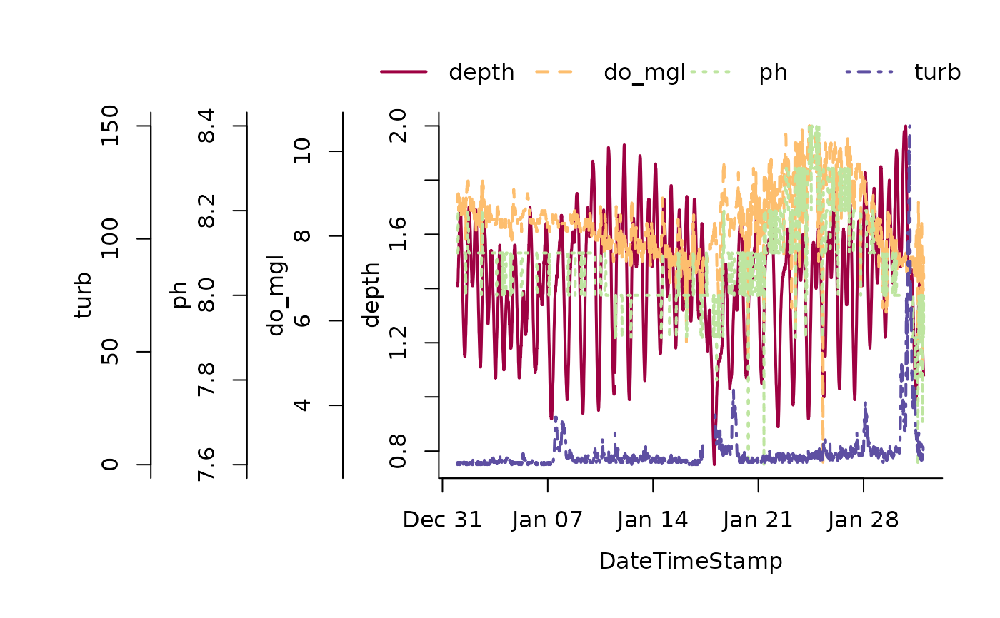
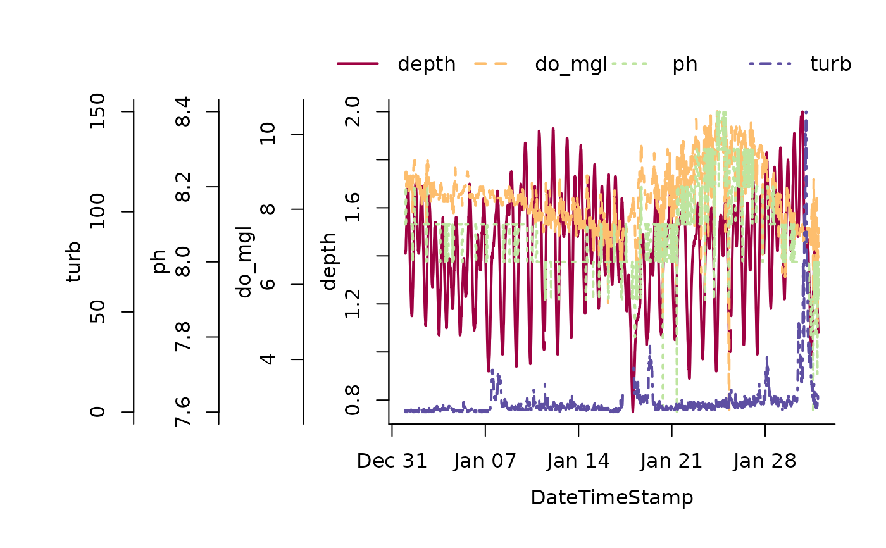

Plot multiple SWMP time series on the same y-axis, aka overplotting
overplot(dat_in, ...)
# S3 method for swmpr
overplot(
dat_in,
select = NULL,
subset = NULL,
operator = NULL,
ylabs = NULL,
xlab = NULL,
cols = NULL,
lty = NULL,
lwd = NULL,
pch = NULL,
type = NULL,
...
)
# S3 method for default
overplot(
dat_in,
date_var,
select = NULL,
ylabs = NULL,
xlab = NULL,
cols = NULL,
lty = NULL,
lwd = NULL,
inset = -0.15,
cex = 1,
xloc = "top",
yloc = NULL,
pch = NULL,
type = NULL,
...
)Arguments
- dat_in
input data object
- ...
additional arguments passed to
plot- select
chr string of variable(s) to plot, passed to
subset. This is a required argument for the default method.- subset
chr string of form 'YYYY-mm-dd HH:MM' to subset a date range. Input can be one (requires operator or two values (a range). Passed to
subset.- operator
chr string specifiying binary operator (e.g., '>', '<=') if subset is one date value, passed to
subset- ylabs
chr string of labels for y-axes, default taken from
selectargument- xlab
chr string of label for x-axis
- cols
chr string of colors to use for lines
- lty
numeric indicating line types, one value for all or values for each parameter
- lwd
numeric indicating line widths, one value for all or values for each parameter, used as
cexfor point size iftype = 'p'- pch
numeric for point type of points are used
- type
character string indicating
'p'or'l'for points or lines, as a single value for all parameters or a combined vector equal in length to the number of parameters- date_var
chr string of the name for the datetimestamp column, not required for
swmprobjects- inset
numeric of relative location of legend, passed to
legend- cex
numeric of scale factor for legend, passed to
legend- xloc
x location of legend, passed to
legend- yloc
y location of legend, passed to
legend
Value
An R plot created using base graphics
Details
One to many SWMP parameters can be plotted on the same y-axis to facilitate visual comparison. This is commonly known as overplotting. The building blocks of this function include plot, legend, axis, and mtext.
See also
Examples
## import data
data(apacpwq)
dat <- qaqc(apacpwq)
## plot
overplot(dat)
 ## a truly heinous plot
overplot(dat, select = c('depth', 'do_mgl', 'ph', 'turb'),
subset = c('2013-01-01 0:0', '2013-02-01 0:0'), lwd = 2)

if (FALSE) {
## change the type argument if plotting discrete and continuous data
swmp1 <- apacpnut
swmp2 <- apaebmet
dat <- comb(swmp1, swmp2, timestep = 120, method = 'union')
overplot(dat, select = c('chla_n', 'atemp'), subset = c('2012-01-01 0:0', '2013-01-01 0:0'),
type = c('p', 'l'))
}
## a truly heinous plot
overplot(dat, select = c('depth', 'do_mgl', 'ph', 'turb'),
subset = c('2013-01-01 0:0', '2013-02-01 0:0'), lwd = 2)

if (FALSE) {
## change the type argument if plotting discrete and continuous data
swmp1 <- apacpnut
swmp2 <- apaebmet
dat <- comb(swmp1, swmp2, timestep = 120, method = 'union')
overplot(dat, select = c('chla_n', 'atemp'), subset = c('2012-01-01 0:0', '2013-01-01 0:0'),
type = c('p', 'l'))
}